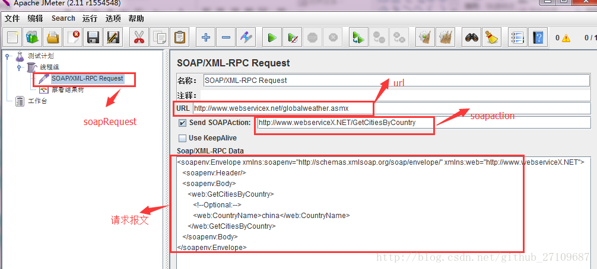

Jmeter接口测试与压力测试
jmeter是apache公司基于java开发的一款开源压力测试工具，体积小，功能全，使用方便，是一个比较轻量级的测试工具，使用起来非常简单。因为jmeter是java开发的，所以运行的时候必须先要安装jdk才可以。jmeter是免安装的，拿到安装包之后直接解压就可以使用，同时它在linux/windows/macos上都可以使用。
jmeter可以做接口测试和压力测试。其中接口测试的简单操作包括做http脚本（发get/post请求、加cookie、加header、加权限认证、上传文件）、做webservice脚本、参数化、断言、关联（正则表达式提取器和处理json-json path extractor）和jmeter操作数据库等等。
接口测试
Jmeter-http接口脚本
一般分五个步骤:
（1）添加线程组
（2）添加http请求
（3）在http请求中写入接入url、路径、请求方式和参数
（4）添加查看结果树
（5）调用接口、查看返回值
jmeter 发get请求


jmeter 发post请求

jmeter 添加cookie
需要在线程组里添加配置元件—HTTP Cookie 管理器

jmeter 添加header
需要在线程组里面添加配置元件—HTTP信息头管理器


jmeter 上传文件

jmeter 参数化
入参经常变化的话，则可以设置成一个变量，方便统一修改管理；如果入参要求随机或可多种选择，则通过函数生成器或者读取文件形成一个变量。所以参数化有三种方式：用户定义的变量、函数生成器、读取文件。
（1）用户定义的变量
需要添加配置元件-用户定义的变量。


（2）函数生成器
需要用到函数助手功能，可以调用函数生成一些有规则的数据。常用的几个函数有_uuid、_random、_time。_uuid会生成一个随机唯一的id，比如在避免java请求重发造成未处理数据太多的情况，接口请求可加一个唯一的请求id唯一的响应id进行一一对应；随机数_random，可以在你指定的一个范围里取随机值；取当前时间_time，一些时间类的入参可以使用,如{time(,)} 是生成精确到毫秒的时间戳、{time(/1000,)}是生成精确到秒的时间戳、${__time(yyyy-MM-dd HH:mm:ss,)} 是生成精确到秒的当前时间。

（3）从文件读取
需要在线程组里面添加配置元件-CSV Data Set Config
其中Recycle on EOF:设置True后，允许循环取值

具体的例子如下所示：


jmeter 断言
jmeter断言用来检测响应返回的结果和我们预期的是否一致。若针对整个线程组的话，则在线程组下添加断言-响应断言；若只是针对某个请求的话，则在请求下添加断言-响应断言。


jmeter关联
接口请求之间存在参数调用，为了保存这个参数，建立jmeter关联。比如登陆接口和购买商品接口，购买商品接口就需要登陆接口返回的token等登陆信息，jmeter关联就可以保存这个token信息，方便购买商品接口使用。
jmeter关联可以通过二种方式来完成，获取到返回结果中指定的值。它们分别是正则表达式提取器、 json path extractor。
（1）正则表达式提取器
若想获取的返回值未匹配到，可以把正则表达式两边匹配的数据扩大点。

关于正则表达式
()：括起来的部分就是要提取的。
.：匹配除换行外的任何字符串。
+：代表+号前面的字符必须至少出现一次（一次或多次）。
?：代表？前面的字符最多可以出现一次，在找到第一个匹配项后停止（0次或1次）。
：代表号前面的字符可以不出现，也可以出现一次或者多次（0次、1次或者多次）
(.*)：贪婪模式，匹配尽可能多的字符
（.*?）或（.+?）：匹配尽可能少的字符，一旦匹配到第一个就不往下走了。
关于模板
若想提取多个值的话，比如是a和b这两个值，则可以写成：$1$$2$。无论要提取多少个值，引用名称就是一个的，比如名称为id，${id_go}:获取整个字符串ab，${id_g1}：获取的是a，${id_g2}：获取的是b。
下面有一个具体的实例，如下图所示：


（2）json path extractor jmeter通过安装json path extractor插件来处理json串，提取json串中的字段值。插件的下载地址：https://jmeter-plugins.org/?search=jpgc-json
下载完成，解压后，直接把lib文件夹放到jmeter相应目录下面。特别说明：jmeter 2.xx左右的版本尝试过无法使用该插件，在jmeter 3.xx左右的版本装完插件后能正常使用。 需要在请求下创建后置处理器-jp@gc-JSON Path Extractor。
具体的实例如下所示：


jmeter 操作数据库
操作数据库基本有四个步骤：
（1）导入mysql的jdbc的jar包
（2）创建数据库的连接配置，线程组里添加配置元件-JDBC Connection Configuration
（3）线程组里添加jdbc request，写sql语句
（4）添加察看结果树，点击启动按钮，就能看到执行的SQL。
具体的实例如下截图所示：


特别说明：jmeter还可以操作oracle、postgreSQL、msSQL、mongodb等等数据库，同时不同的数据库，JDBC Connection Configuration填写的Database url格式和JDBC Driver驱动名称也不相同。jmeter数据库驱动列表如下表所示：
| 数据库 | 驱动 | 数据库url |
|---|---|---|
| mysql | com.mysql.jdbc.Driver | jdbc:mysql://host:port/{dbname}?allowMultiQueries=true |
| oracle | org.postgresql.Driver | dbc:postgresql:{dbname} |
Jmeter-webservice接口脚本
基本分为五个步骤：
（1）先需要通过soapui工具获取到webservice接口的请求地址、请求报文和请求soapaction。
（2）jmeter新建一个线程组
（3）线程组下建立SOAP/XML-RPC Request，写入请求url、请求报文、请求soapaction。
（3）启动jmeter，调用接口，通过察看结果树查看返回值。
soapui获取信息的实例如下图所示：

soapui提交完后，点击raw,可看到soapation，有些接口若没返回soapation,则jmeter里也就不用填。

jmeter-webservice脚本实例如下图所示：

压力测试
压力测试分两种场景：一种是单场景，压一个接口的；第二种是混合场景，多个有关联的接口。压测时间，一般场景都运行10-15分钟。如果是疲劳测试，可以压一天或一周，根据实际情况来定。 压测任务需求的确认
压测前要明确压测功能和压测指标，一般需要确定的几个问题：
1. 固定接口参数进行压测还是进行接口参数随机化压测？
2. 要求支持多少并发数？
3. TPS（每秒钟处理事务数）目标多少？响应时间要达到多少？
4. 压服务器名称还是压服务器IP，一般都是压测指定的服务器
压测设置
1. 线程数：并发数量，能跑多少量。具体说是一次存在多少用户同时访问
2. Rame-Up Period(in seconds):表示JMeter每隔多少秒发动并发。理解成准备时长：设置虚拟用户数需要多长时间全部启动。如果线程数是20，准备时长为10，那么需要10秒钟启动20个数量，也就是每秒钟启动2个线程。
3. 循环次数：这个设置不会改变并发数，可以延长并发时间。总请求数=线程数*循环次数
4. 调度器：设置压测的启动时间、结束时间、持续时间和启动延迟时间。
压测结果查看
运行完后，聚合报告会显示压测的结果。主要观察Samples、Average、error、Throughput。
1. Samples:表示一共发出的请求数
2. Average：平均响应时间，默认情况下是单个Request的平均响应时间（ms）
3. Error%:测试出现的错误请求数量百分比。若出现错误就要看服务端的日志，配合开发查找定位原因
4. Throughput:简称tps,吞吐量，默认情况下表示每秒处理的请求数，也就是指服务器处理能力，tps越高说明服务器处理能力越好。
压测结果的分析
1. 有错误率同开发确认，确定是否允许错误的发生或者错误率允许在多大的范围内；
2. Throughput吞吐量每秒请求的数大于并发数，则可以慢慢的往上面增加；若在压测的机器性能很好的情况下，出现吞吐量小于并发数，说明并发数不能再增加了，可以慢慢的往下减，找到最佳的并发数；
3. 压测结束，·登陆相应的web服务器查看CPU等性能指标，进行数据的分析;
4. 最大的tps:不断的增加并发数，加到tps达到一定值开始出现下降，那么那个值就是最大的tps。
5. 最大的并发数：最大的并发数和最大的tps是不同的概率，一般不断增加并发数，达到一个值后，服务器出现请求超时，则可认为该值为最大的并发数。
6. 压测过程出现性能瓶颈，若压力机任务管理器查看到的cpu、网络和cpu都正常，未达到90%以上，则可以说明服务器有问题，压力机没有问题。
7. 影响性能考虑点包括：数据库、应用程序、中间件（tomact、Nginx）、网络和操作系统等方面。
jmeter在linux下进行压力测试
1. jmeter 在linux安装
简单说下，就是要先安装jdk,同时再配置环境变量，最后再上传jmeter压缩的安装包，在linux下解压完安装包就可以使用了。
2. jmeter在linux运行
进入jmeter下的bin目录下运行脚本，未配置jmeter环境变量的条件下，运行的命令：
./jmeter -n -t a.jmx -l res.jtl
其中a.jmx是准备好的jmeter脚本,res.jtl是测试结果文件，测试结果文件可以导入到jmeter察看结果树下查看。